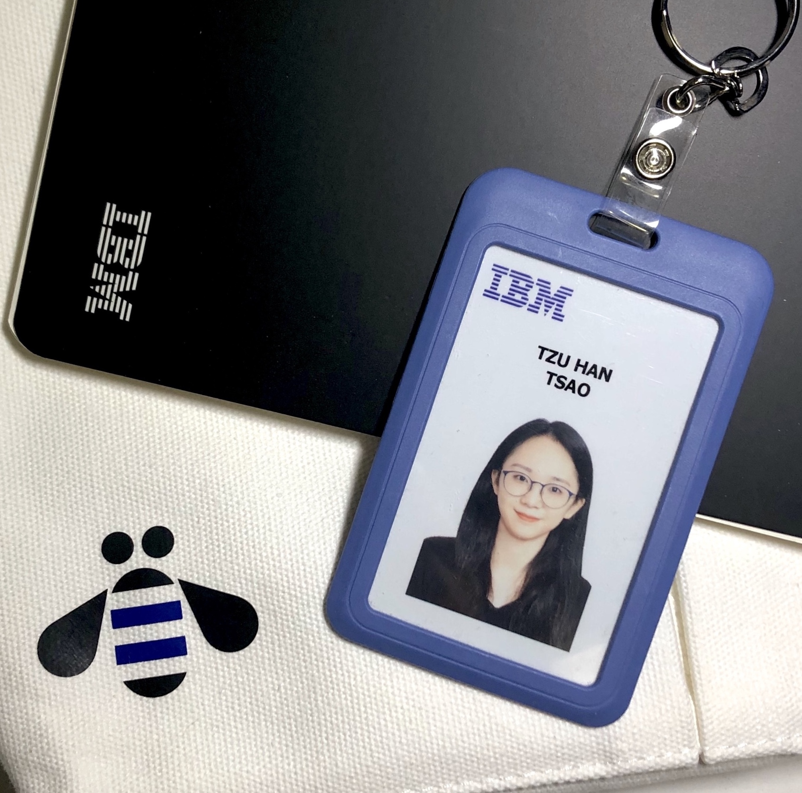
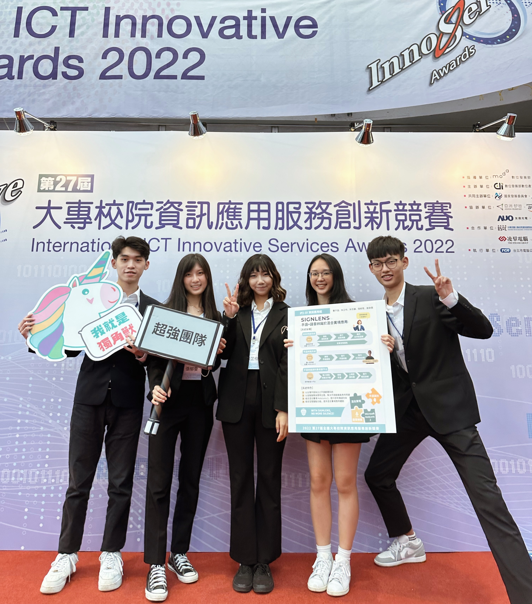
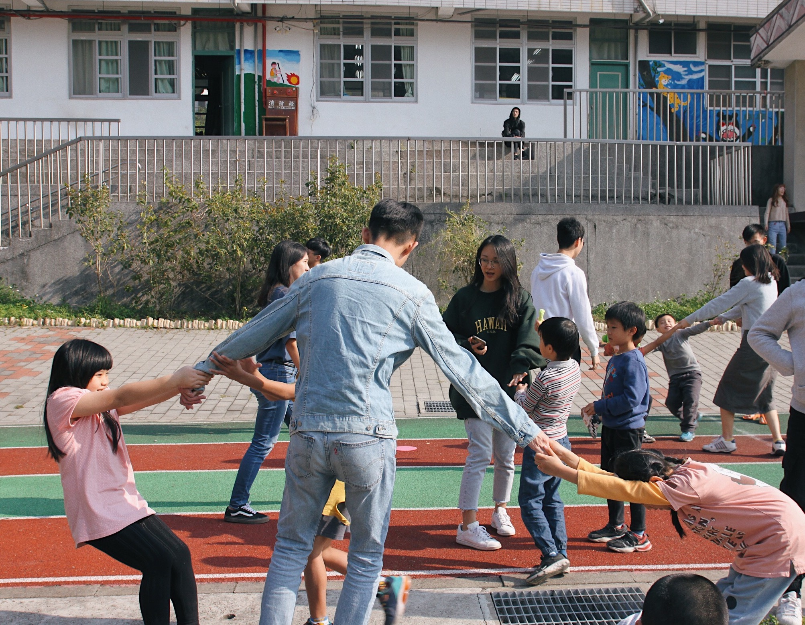

more about me
Tzu-Han (Hannah) Tsao


internship
experience
IBM
Associate Application Consultant
July 2022 - Aug. 2022
- Revamped the corporate internet banking system for a top-5 bank in Taiwan, leveraging SQL, Python, and MS Excel (Pivot Tables, Solver) for in-depth analysis of customer transaction data during the requirements analysis phase
- Conducted systems analysis and design in 2 digital transformation projects, showcasing a deep understanding of IT frameworks and data architecture
- Delivered automated Quality Assurance (QA) solutions for 5 commercial banks by analyzing existing systems workflows and executing collaborative projects with 4 interns
Cathay Financial Holdings
Cloud Technology Intern
July 2021 - Dec. 2021
- Engaged in a cross-functional cloud migration project performing performance tests on 3 major API gateways using AWS and Google Cloud Platform (GCP), showcasing a robust foundation in cloud infrastructure and optimization
- Led the development and design of a cloud-based brainstorming platform's system architecture using Java Spring Boot, successfully deploying to AWS in a collaborative effort with 5 interns

education
University of Washington -
Michael G. Foster School of Business
Master of Science in Information Systems
Expected June 2024
National Chengchi University -
College of Commerce
Bachelor of Science in
Management Information Systems
Sept. 2019 - June 2023


leadership
& involvement
Team Leader
Capstone Project - SignLens
July 2021 - Dec. 2022
- Directed and managed the end-to-end development lifecycle of a machine learning-based sign language translator, from conceptualizing to deployment, ensuring adherence to project timelines and quality standards
- Designed data architecture and built a PostgreSQL database on Microsoft Azure with over 7,560 sign language entries
- Won First Place in the International ICT Innovative Services Awards and the departmental project competition
Vice President
Management Information Systems
Student Association
Aug. 2020 - June 2021
- In charge of event planning and managed budgets of the association totaling $15k+
- Held 5 student events and 3 career talks with alumni and executives from the IT industry
Volunteer
Chinan Service Group,
National Chengchi University
Sept. 2020 - Feb. 2021
- Organized an English camp for over 30 elementary school students of an indigenous tribe in Taiwan